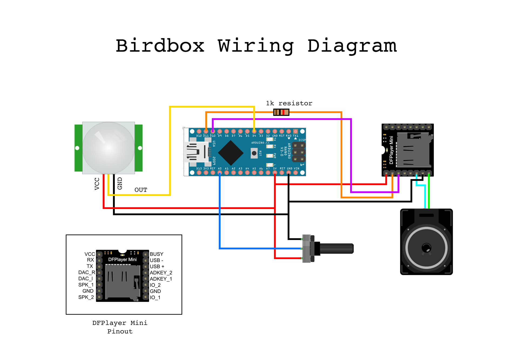

The Birdbox, a little device that plays the sound of birdsong when it detects movement, was born out of a trip I took to the home of Tom Jennings, an LA-based artist, hacker, queer activist, and American Motors enthusiast. I was there with a friend to take a look at a Morris Minor that Tom wants me to have as a project, but my friend and I spent a couple of hours hanging out with Tom, talking about his projects, of which there are many, and just vibing in his really cool space.
While having coffee in his living room, which contains, among other things, a bingo board, a giant sculpture of a neuron, and Librascope/General Precision LGP-21 Computer, I noticed a little pile of circuitry sitting on a chair that was playing bird chirps.
After I got home that night, I kept thinking about that little bird gizmo, and how nice it would be to have something playing the sound of birds in my own space. That desire led to the creation of the Birdbox.
Like many of my projects, this one has been built to look vintage, and like what I’ve seen described as “hampunk,” an aesthetic manifesto that says “All electronic projects should aspire to looking somewhat like a Heathkit without getting too fancy.”
During the development of this project, an online acquaintance mentioned to me that in Japan, many of the train stations have piped-in bird sounds. That inspired me to create a faux announcement that plays when the Birdbox is first turned on. After a short chime, it says, in Japanese, something along the lines of, “When motion is detected, the soothing sounds of birds will fill your space.”
This project is based around the DFPlayer Mini, an inexpensive module that can play back audio files stored on a micro SD card without the need for an external amplifier. The DFPlayer Mini can be used as a standalone device, or in conjunction with a microcontroller. In this case, I chose to use an Arduino Nano. I don’t know anything about the operation of Tom’s bird-sound contraption, or what triggers it, but I decided I wanted mine to be motion-sensing. This functionality is provided by a PIR (passive infrared) module. I also experimented with a mini doppler radar motion-sensor I had on-hand, but I found that it was too sensitive. It was being triggered by the motion of things on the other side of walls, like plants swaying in the wind outside, so it went back into the parts bin for future use.
The way the Birdbox works is simple: When the PIR sensor detects movement, it raises the voltage on its output line to 5V. When the Arduino sees that line go high, it gives the DFPlayer Mini module a command to play one of the audio files, selected at random, stored on its micro SD card. Volume control is provided by a potentiometer wired to the Arduino.
I gathered the audio for this project from Freesound.org, and edited what I downloaded into roughly 69 files about a minute or two in length each. I will not be providing those files here because I do not want to deal with making sure I have all the licensing requirements correct for each of them. You will have to download your own files. Of course, you don’t even have to use audio of birdsong. You could make your own project play dog barks or train horns, or clips from Lilo and Stitch if you wanted to.
I like my projects to be self-contained when possible, so I built the Birdbox to run off a single 18650 lithium-ion cell attached to a BMS board with 5V output. If you would like to build your own version of this project, you have options here. The project could be powered by way of the Arduino’s USB port, or the Arduino’s Vin pin, which takes an input voltage of 7-12 and drops it to the 5V the Arduino and the rest of the components of this project run on.
The code for the project is heavily based on the DFMini Player demo sketch that DFRobot provides on its website. The primary changes I’ve made are adding code to trigger playback when motion is detected, making the volume level adjustable with a knob, and randomizing the order in which the files are played back.
/* This sketch is heavily based on a demo code by
[Angelo qiao](Angelo.qiao@dfrobot.com) for DFRobot,
but it replaces the function that plays a new mp3 file after
a set period of time with a function that plays a new mp3
file when triggered by an external sensor, either a PIR,
doppler radar, or even a button*/
/***************************************************
DFPlayer - A Mini MP3 Player For Arduino
***************************************************
GNU Lesser General Public License.
See
2.This code is tested on Arduino Uno, Leonardo, Mega boards.
****************************************************/
#include "Arduino.h"
#include "SoftwareSerial.h"
#include "DFRobotDFPlayerMini.h"
int inputPin = 4; // choose the input pin (for doppler microwave (or PIR) sensor)
int pirState = LOW; // we start, assuming no motion detected
int val = 0; // variable for reading the pin status
int volumeLevel;
int gain;
int birdNumber = 2;
SoftwareSerial mySoftwareSerial(10, 11); // RX, TX
DFRobotDFPlayerMini myDFPlayer;
void printDetail(uint8_t type, int value);
boolean triggered = false;
void setup()
{
delay(250);/*If power is applied to SD player and Arduino at the same time,
the Arduino will try to initialize comms with the player before the
player is ready. This short delay provides time for the player to get
booted up before comms are attempted*/
mySoftwareSerial.begin(9600);
Serial.begin(115200);
Serial.println();
Serial.println(F("DFRobot DFPlayer Mini Demo"));
Serial.println(F("Initializing DFPlayer ... (May take 3~5 seconds)"));
if (!myDFPlayer.begin(mySoftwareSerial)) { //Use softwareSerial to communicate with mp3.
Serial.println(F("Unable to begin:"));
Serial.println(F("1.Please recheck the connection!"));
Serial.println(F("2.Please insert the SD card!"));
while(true){
delay(0); // Code to compatible with ESP8266 watch dog.
}
}
Serial.println(F("DFPlayer Mini online."));
myDFPlayer.volume(20); //Set volume value. From 0 to 30
myDFPlayer.play(1); //Play the first mp3
}
void loop()
{
volumeLevel =analogRead(A0); //read potentiometer position for volume control
gain = map(volumeLevel, 0, 1023, 0, 30); //map pot value to DFPlayer volume range
myDFPlayer.volume(gain); //Set volume value. From 0 to 30
val = digitalRead(inputPin); // read input value
if (val == HIGH) { //if the sensor is high
if (!triggered){ //and not already high
myDFPlayer.play(birdNumber); //Play another mp3
triggered = true;
birdNumber = random(2,72); /*pick a random mp3 to play next. Make sure this does not
exceed the number of files you have*/
}
}else{
triggered = false;
if (pirState == HIGH){
// we have just turned of
pirState = LOW;
}
}
if (myDFPlayer.available()) {
printDetail(myDFPlayer.readType(), myDFPlayer.read()); //Print the detail message from DFPlayer to handle different errors and states.
}
}
void printDetail(uint8_t type, int value){
switch (type) {
case TimeOut:
Serial.println(F("Time Out!"));
break;
case WrongStack:
Serial.println(F("Stack Wrong!"));
break;
case DFPlayerCardInserted:
Serial.println(F("Card Inserted!"));
break;
case DFPlayerCardRemoved:
Serial.println(F("Card Removed!"));
break;
case DFPlayerCardOnline:
Serial.println(F("Card Online!"));
break;
case DFPlayerUSBInserted:
Serial.println("USB Inserted!");
break;
case DFPlayerUSBRemoved:
Serial.println("USB Removed!");
break;
case DFPlayerPlayFinished:
Serial.print(F("Number:"));
Serial.print(value);
Serial.println(F(" Play Finished!"));
break;
case DFPlayerError:
Serial.print(F("DFPlayerError:"));
switch (value) {
case Busy:
Serial.println(F("Card not found"));
break;
case Sleeping:
Serial.println(F("Sleeping"));
break;
case SerialWrongStack:
Serial.println(F("Get Wrong Stack"));
break;
case CheckSumNotMatch:
Serial.println(F("Check Sum Not Match"));
break;
case FileIndexOut:
Serial.println(F("File Index Out of Bound"));
break;
case FileMismatch:
Serial.println(F("Cannot Find File"));
break;
case Advertise:
Serial.println(F("In Advertise"));
break;
default:
break;
}
break;
default:
break;
}
} The wiring diagram shown below is sufficient to get Birdbox working, but not that it does not include wiring for a power supply. I did not include that because the power-supply wiring depends on whether you decide to power your project through the Arduino's USB port, the Arduino's Vin pin, or with a dedicated rechargeable battery, like I did
